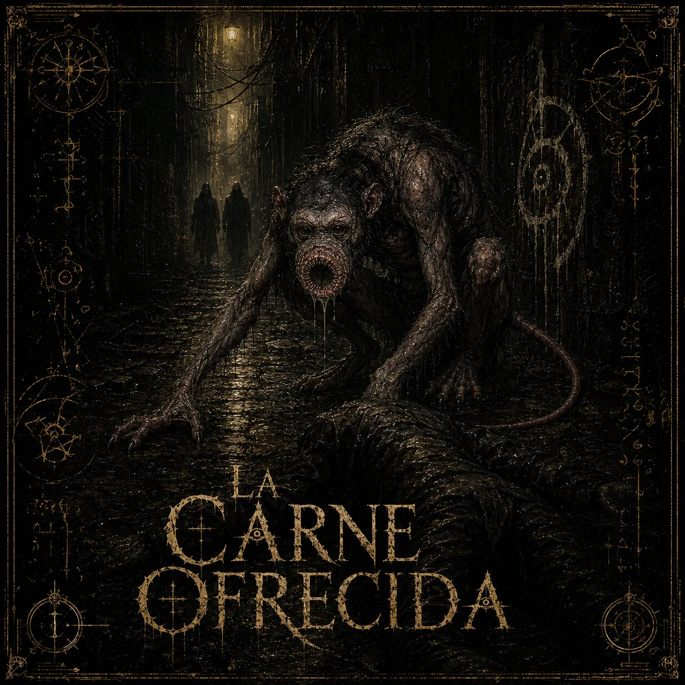
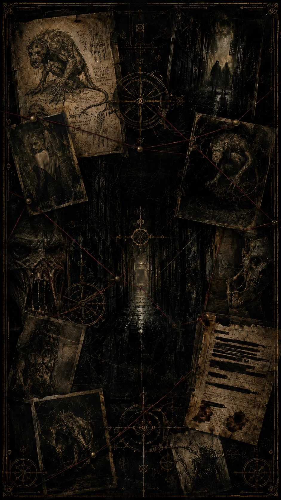

ACCESO PARCIAL
ENTIDAD // ŚUKRAHĀRĪ
Clasificación incompleta. Procedencia extradimensional. Patrón de alimentación documentado.
Consultar →ARCHIVO // ACCESO PARCIAL
Hay cosas que existen aunque nadie quiera hablar de ellas.
Aquello que nos Rodea es un universo de horror formado por relatos, personajes, criaturas, cultos, documentos y sucesos que empiezan a tocarse donde nadie debería mirar.
No todo el archivo está disponible. Algunas entradas todavía no existen. Otras han sido ocultadas.

ARCHIVO 001 · +18
Una noche. Un callejón. Algo que tiene hambre.
ABRIR EL EXPEDIENTE →«El pánico estropea el sabor.»— Archivo 001
Clasificación incompleta. Procedencia extradimensional. Patrón de alimentación documentado.
Consultar →
Personas que no deberían conocerse. Símbolos que vuelven a aparecer.
Examinar →El acceso a esta entrada todavía no ha sido autorizado.
[ARCHIVO BLOQUEADO]EL ARCHIVO ACABA DE ABRIRSE